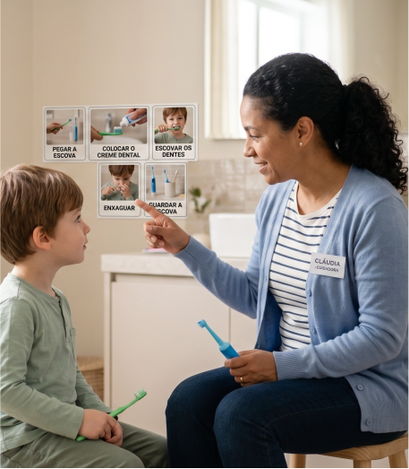

Neste módulo, você aprenderá como a comunicação visual pode ser uma importante aliada no processo de higiene bucal de pessoas com TEA. O uso de imagens, fotos, vídeos, desenhos e outras pistas visuais ajuda a tornar as atividades mais previsíveis, compreensíveis e seguras, reduzindo a ansiedade e facilitando a participação da pessoa durante os cuidados diários.
Ao longo dos estudos, você desenvolverá conhecimentos e habilidades para:
Ao final, você estará mais preparado para utilizar ferramentas visuais de forma prática e eficiente.
